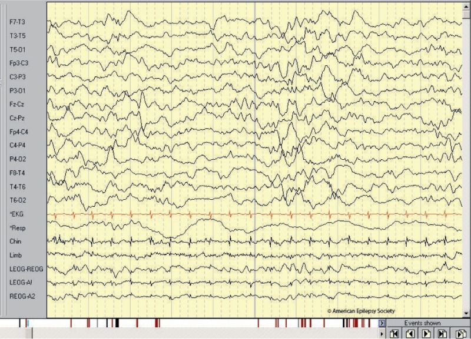
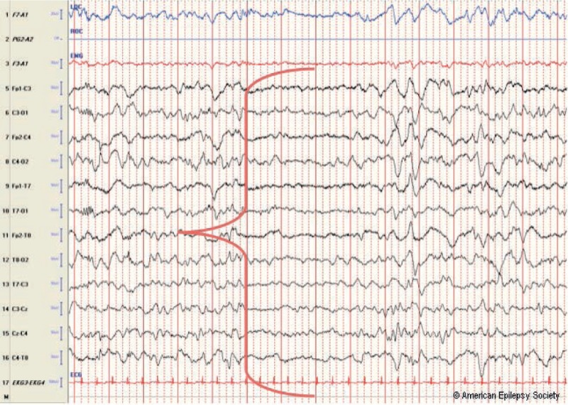

Neonatal EEG
Neonatal EEG has many aspects to consider; for example, preterm babies may not have a head large enough for all 16 electrodes. Also, it is very important to know the conceptional age of the baby, as its developmental stage tells us what activity is normal. Conceptional age is defined by gestational age at birth plus weeks since birth.
ACNS Guideline 2 has the requirements for an shorter infant EEG, while ACNS Guideline 13 has the technical requirements for continuous neonatal monitoring.

Infants have 3 types of sleep:
Quiet Sleep
- Regular Breathing
- Very little movement
- Tracé discontinu in preemies until around 35 weeks GA
- Tracé alternant from ~35 weeks GA until 42 weeks
- Tonic muscle

Tracé alternant in a 25 day old girl born at 39 weeks GA. (Britton et al.)
Active sleep
- Irregular Respirations
- Rapid Eye Movements/REMs
- Body movements
Transitional Sleep
A combination of the two
Brief periods between active sleep and quiet sleep status
Sources:
Anonymous Contributors (2020). Normal EEG in children. ICNApedia. Retrieved 00:18, 24 January, 2022 from https://icnapedia.org/wiki/content/normal_eeg_in_children?rev=1582478894.
Britton JW, Frey LC, Hopp JLet al., authors; St. Louis EK, Frey LC, editors. Electroencephalography (EEG): An Introductory Text and Atlas of Normal and Abnormal Findings in Adults, Children, and Infants [Internet]. Chicago: American Epilepsy Society; 2016. The Developmental EEG: Premature, Neonatal, Infant, and Children. Available from: https://www.ncbi.nlm.nih.gov/books/NBK390356/